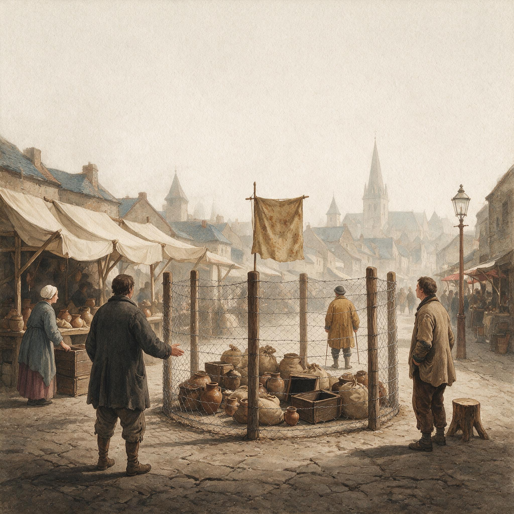

第 16 章
反消费主义的陷阱
在一本1964年美国出版的哲学书里，赫伯特·马尔库塞写下了一个后来被反复引用的判断：发达工业社会最有效的控制，不是警棍和牢房，而是一套源源不断的“虚假需求”。广告把这套需求包装成每

反消费主义的陷阱：历史出版插图
AI 生成插图，非史实影像。
个人发自内心的愿望。人以为自己在选择，其实只是按别人写好的剧本表演。
同一时期，美国许多城市的百货商店里，彩色电视机的柜台前挤满了人。推销员递出合同，首付很低，余下分期。一个家庭只要签下名字，就能把闪耀彩色光芒的客厅搬回家。这台电视往往比一个普通工人几个月的工资还贵，但首付低得让人心动。
买下电视的家庭并不读马尔库塞。谈马尔库塞的人，很多并不缺一台彩电。
这两种东西几乎同时抵达美国社会，一边是批判消费的思想，另一边是正在扩散的某种消费事实。它们看起来对立，却共享一个往往被忽略的假设：消费是一种道德活动。
上一章我们看见，分期付款把未来的钱搬到当前，代价是利息和管理费。当债务普遍化后，社会很容易把账算到个人头上：你为什么要买你买不起的东西？
这种追问很少反过来检查合同为什么设计成那样，总成本为什么不被标在显眼处。奇怪的是，许多反消费主义的声音也在做同样的事。它指责消费者被广告洗脑，被虚荣心奴役，用购物填补空虚。这些话听起来像在保护普通人，效果却常常相反。它把消费和尊严的关系拧得更紧。你越骂一个人用消费证明自己，就越是在告诉他：尊严确实需要消费来证明。
拆结之前，先看马尔库塞的论证。1964年，《单向度的人》出版。这本书后来成了消费批判的重要底本。
马尔库塞认为，发达工业社会创造了一种舒适的、顺滑的控制方式。它不靠暴力，靠的是不断制造“虚假需求”。工人在生产线上制造商品，下班后回到市场购买商品。他们以为自己有选择的自由，其实那套选择早已被编排好。新款汽车、新式家电、新的流行风格，一年一年更新，目的就是让人永远处在追赶状态。
人的解放潜能被消解在购物中心里。革命没有发生，不是因为警察打散了游行，而是因为人们忙着在家里拆包装盒。这套批判到今天仍然很有解释力。
它说中了一个真实现象：许多人确实买过事后觉得不必要的东西，也愿意为某些品牌符号多付钱。
但它有一个致命盲区。既然存在“虚假需求”，就必须存在一套“真实需求”作为参照。谁来定这条线？是知识分子吗？是政府吗？还是每个人自己？
如果一个工人说，他需要一台电视，因为孩子天天跑到邻居家去看儿童节目，而一个教授说这是虚假需求，谁更接近他的真实？马尔库塞的框架很容易滑向一种居高临下的姿态：批判者站在清醒的位置，消费者站在被蒙蔽的位置。清醒者不用替自己的房租和校服发愁，被蒙蔽者却要为自己的每一次购买辩护。
这个盲区后来变成了一个社会事实。定义“真实需求”从来不是单纯的哲学问题。它总被制度重新划界。美国政府曾经用食物开支乘以三来估算贫困线，这个公式本身就代表了一种官方对“必需”的界定。哪些支出算基本需求，哪些算奢侈品，直接决定了一个家庭能否获得公共救助。二十世纪中叶的住房政策同样如此。
政府把拥有一套郊区住宅列为中产生活的标准配置，再把按揭利率压到普通家庭可以承受的水平。于是，买房不只是消费，而成了进入体面阶层的入口。广告部门又把更多商品塞进“现代家庭必备”的清单。
真实与虚假的界限，从来就不是一盏只由知识分子掌管的灯。1970年代，美国出现了一股“简约生活”运动。它从六十年代的反文化潮流里长出来，到这时候变成了一本本可操作的指南。宣传册上印着朴素的口号，号召人们离开消费竞赛，自己种菜、修理旧物、缝补衣服。插图里的家庭穿着棉麻质地的衣服，在阳光充足的木桌边做面包。这些东西很养眼，也很有道德感。
同一时期，经济学家舒马赫的《小即是美》也在美国流传开来，它批评巨型工业和过度消耗，提倡小规模、分散化、不那么物质的生活方式。城市中产阶级很快接受了这套话语。它提供了一种宽慰：你不必再为职场攀比焦虑，你可以选择另一种活法。整个社会都在追求更多，而你选择更少。这个选择本身就带着一点优越，只是当时没人点破。问题就出在“选择”上。
能够选择自愿简朴的人，恰恰是那些已经拥有充足支付能力的人。他们可以把消费降下来，因为基本保障并不依赖每一次消费。房子、储蓄、社会保险、教育程度带来的人际网络，这些他们都有。少买几件衣服，少换一部车，日子不会出现真正的缺口。他们可以把这种生活方式称为自由。
但对一个拿最低工资的清洁工来说，事情完全不同。七十年代中期，美国联邦最低工资大约在每小时两美元出头。按每周四十小时计算，税前月收入不过三百美元多一点。一间普通公寓的月租金在一百美元上下。扣掉房租、公交费、最基本的食物，一个月剩不下几美元。她已经够简朴了。她不需要任何人来教她种菜。她需要的是更多的支付能力，去买体面的住房、基础的医疗和孩子需要的教育。
这里出现了第一个反差。简约生活运动向中产阶级推销“减少消费”的道德方案，可一个清洁工的困境不是消费太多，而是支付太少。她缺的不是欲望的节制，而是支付接口的畅通。
当这种道德方案被普遍化后，它开始产生一种奇怪的排序：有支付能力的人通过减少消费获得道德满足；没有支付能力的人却要因为“还是想买”而承受道德压力。穷人在这个框架里被放到更低处。他们不仅买不起体面的生活，还要被质疑为什么不能像中产知识分子那样优雅地简朴。道德批判没有解绑支付与尊严的关系，反而给它加了一道锁：你买不起，所以你失败；你想买，所以你庸俗。
这不是美国七十年代独有的现象。它的各种变体后来在中文互联网上随处可见。
过去几年，“消费降级”和“极简主义”一起进入公共讨论。很多博主在网上教人“断舍离”，整理“胶囊衣橱”，把屋里的东西一件件清出去。页面上有分类标签，有前后对比图，有“你只需要这几件东西”的清单。这些内容看起来干净，带着一种安静的优越感。
可页面角落常常还有别的东西：广告位、商品链接、品牌合作。观众在看一个人扔东西的过程中，为这个人创造了流量。流量通过平台广告分成和带货链接变成收入。
换句话说，那些教你少买东西的人，他们的收入恰恰来自你观看他们少买东西。这个画面本身不需要道德评判，它就足够说明问题。
要看清这个循环，可以把博主的收入结构拆开。通常分成三块：平台流量分成、品牌推广、自有产品售卖。流量分成取决于观看时长和互动量。一个视频越长，观众停留越久，分成越高。于是内容越来越精致，越来越有仪式感。镜头要干净，光线要柔和，背景里的家具要贵。不这样，观众不看。可越精致，成本越高。一间适合拍摄的公寓、一台像样的相机、一套稳定的布景，这些都需要钱。
于是“教你简朴”本身成了一种消费展示。广告商愿意投钱，因为看这类内容的观众有明显的消费标签：他们对生活方式敏感，对品牌有认知，对“提升自己”有诉求。整个链条里，反消费成了新消费的入口。
这个循环有三个齿轮咬在一起。第一个齿轮是内容生产：极简视频需要投入不低的视觉成本，否则没人看。第二个齿轮是平台变现：观看时长直接转化成广告收入，博主因此有动力不断产出“精致简朴”。
第三个齿轮是观众认同：看视频的人希望过得更轻盈，却往往被引导去购买收纳用品、素色衣物、昂贵的多功能家具。三个齿轮互相推动，把一股原本反对消费的冲动，重新送回了消费的传送带上。
一个住在合租屋里的年轻人晚上刷到这样的视频。他工资刚够付房租和吃饭。他看见博主把衣柜清空，只剩几件素色衣服，说这样人生会轻松。他心里生出一点向往，也生出一点羞耻。别人的简单是精心设计的，自己的简单是不得不的。他点开页面下方的一个收纳盒链接。
这个动作很小，却暴露了整个话语的偏向：反消费主义在传播中不断被中产化，最后成了一种新的身份标识。它没有教一个低收入者如何在支付能力不足的情况下过得更安全，而是教他怎么把自己的匮乏包装得更体面。
至此，可以回到那个核心悖论。为什么反消费主义的道德批判反而强化了消费与尊严的绑定？因为这套话语把消费从经济行为转化为道德行为。一个人买什么、买多少，被当成他灵魂的镜子。买得多是虚荣，买得巧是品味，买得少是清醒。
至此，需要厘清一个核心的自我悖论：对消费主义的主流批判常常陷入这个陷阱——它把消费行为道德化，指责消费者被洗脑、被物化、被虚荣心奴役，但这种指责本身恰恰强化了消费与尊严的绑定关系；你越是骂一个人“用消费来填补空虚”，你就越是在告诉他，他的尊严确实需要用消费来证明。
消费因此成了证明自己的方式。你越批评别人用消费证明尊严，你越确认消费和尊严之间有一条线。道德批判本来想松开这条线，可每一次用力都把线拉得更紧。
到这里，需要诚实说一句：我们也不知道“真实需求”应该由谁定义。这不意味着问题无解，而是说明它是一种持续的社会争议。不同历史时期、不同制度安排会给出不同答案。二十世纪中叶的美国，政府曾把住房、汽车、家电定义为中产阶级生活的标准配置，并用公共政策推动家庭消费。六十年代的反文化运动试图用另一套价值体系对抗这个定义，但他们说出的“真实”同样带有自己的阶级位置。
今天面对的问题，不是“真假需求”的哲学分辨，而是支付能力的不均等如何被道德话语遮蔽。一个人买不起药，不是因为他把真需求搞错了，而是价格超出了钱包。把这个问题说成“你过度消费”，是把结构性问题翻译成个人品德问题。这么说，不是要否认消费社会的问题。广告确实在制造欲望，品牌确实在贩卖符号，信用卡确实在鼓励透支。
这些真实性，前面已经用支付接口的比喻讲过。问题在于，解决这些问题的路不能只靠道德劝说。说教的第一步往往是给人分类：你是清醒的，他是被蒙蔽的。这种分类一旦完成，对话就结束了。一个人被定义为“被虚荣心奴役”，他的具体处境就失去了被看见的可能。
他为什么在凌晨三点下单？是不是只有那个时刻，他才觉得自己能掌控一点什么？他为什么给完全不熟的人买一部手机当生日礼物？是不是因为怕自己不出手，就没有人注意他在这个城市里的存在？这些问题比“他太虚荣”复杂得多。它们不一定都有答案，但至少不该被一句道德判断打发掉。
这里还有一个更隐蔽的假设：需求可以被教育。一个人只要明白了什么是真实需求，他就会少买。这个假设忽略了一个事实：价格不能被道德教育改变。你没法通过“降低欲望”来降低房租。房租由土地供给、信贷政策和城市扩张方式决定，不由你的道德状态决定。你也没法通过“停止攀比”来降低孩子的校服费。校服费由学校规定和市场供给决定。
当总账单里的主要项目都不由个人欲望定价时，劝一个人“少买一点”只是让他在边边角角上节省，省出来的钱往往连一次急诊挂号都不够。
简约生活运动没有消失。它以各种形态活到今天。当代的极简主义并不全是表演。很多人确实在减少物品之后感到生活更轻松。这些个体经验值得尊重。
可一旦这种私人选择被放大成公共道德，问题就来了。一个能轻松选择扔掉东西的人，和一个不能选择买足够东西的人，过着完全不同的“简朴”。前者是主动放弃，后者是天然匮乏。把这两种情况放进同一个话语里，后者的处境就被掩盖了。
有支付能力的人通过简约生活获得道德地位，没有支付能力的人却被日常生活逼成极简，他们之间隔着一条难以逾越的支付能力鸿沟。这条鸿沟不是观念造成的，而是住房、医疗、教育等大宗支出的配置造成的。
现在再看那个清洁女工。她不是书里虚构的角色。任何一个大城市的清晨，都能看见和她相似的人。她凌晨五点半起床，赶第一班公交去上早班。八小时里，她清理写字楼里废弃的纸杯、烟头和印错的合同。
马尔库塞的“虚假需求”概念在传播过程中被简化了。它原本是一个关于社会控制结构的理论，但到了大众媒体和校园演讲里，往往变成了一句更直接的话：广告让你买你不需要的东西。
六十年代末，美国大学校园里经常能听到这样的演讲。讲台上的人穿着随便但干净的衬衫，对台下坐着的年轻人说，你们的父母被消费主义骗了，他们以为买了割草机和第二辆车就拥有了幸福，其实他们只是被广告驯化了。台下有人点头，有人记笔记。这些年轻人大多来自中产家庭，他们的学费和生活费正是来自那些“被驯化”的父母。这个场景本身并不讽刺，但它暴露了一个结构性的不对称：批判消费的人往往站在消费阶梯的上层往下看。他们可以批判，是因为他们已经拥有。他们拥有的不是奢侈品，而是安全——一种即使少买几件东西也不会掉出体面生活的安全。
这种安全在七十年代的美国不是均匀分布的。1974年，美国联邦最低工资是每小时两美元。按这个标准，一个全职工人的年收入大约在四千美元出头。同一年，美国人口普查局设定的贫困线，一个四口之家大约是五千美元。这意味着一个拿最低工资的人，即使全年无休地工作，也养不起一个四口之家。他需要第二份工，或者需要伴侣也出去工作。
而一间普通公寓的月租金，在大多数城市已经超过一百美元。在纽约、旧金山这样的大城市，租金更高。一个清洁女工如果把月收入的三分之一以上花在房租上——这在当时已经是普遍情况——剩下的钱要覆盖食物、交通、孩子的衣服和学习用品。她不需要任何人来告诉她什么是“虚假需求”。她的需求非常真实：她需要孩子在学校里不被同学嘲笑，需要自己在下班后还有力气做一顿饭，需要在生病时敢去看医生。这些需求的价格不是广告定的，是房东、医院和学校定的。
简约生活运动的倡导者们并没有恶意。他们中的很多人真诚地相信，减少消费可以让人更自由。1973年出版的一本简约生活指南里，有一章专门讲如何自己种菜。插图是一个穿着围裙的白人女性，蹲在院子里拔胡萝卜。图片说明写着：“你不需要超市，你只需要土壤。”
这句话在字面上是对的，但它假设你有院子。一个住在公寓楼里的清洁女工没有院子。她甚至没有阳台。她的窗户对着通风井。她当然可以参加社区菜园，但社区菜园需要时间，而她打两份工。这本指南的另一章讲如何修理旧家具，配图是一个男人在车库里给一把椅子刷漆。图片说明写着：“每一件旧物都有第二次生命。”
这句话也没错，但它假设你有车库，有买油漆的余钱，有周末的时间。这些假设在书里从未被标明，因为它们对作者和读者来说太自然了。他们生活在这些条件里，以至于看不见这些条件本身是一种特权。
这就触及了简约生活运动最深的盲区：它把一种特定阶级的生活条件，包装成了普适的道德选择。一个人能选择“自愿简朴”，是因为他的基本需求已经被市场或公共品满足。他可以少买衣服，因为衣柜里已经有足够的衣服。他可以自己种菜，因为他有一块地或者能租到一块地。他可以修理旧物，因为他有工具、技能和时间。这些条件不是道德修养的结果，而是支付能力的结果。当一个清洁女工被放进这个框架里，她的处境就变得不可见。她已经在过简朴生活，但不是自愿的。她的简朴不是选择，是结果。她不需要学习如何减少消费，她需要的是增加支付能力。
下午换第二份工。晚上回到租来的小房间，灯不太亮。她坐下来，把一张皱巴巴的收据展开，把这一周的开支一项项记下来。房租已经付过，水电压在抽屉中的信封里，剩下的钱要留给孩子下个月的校服费。
她在纸上加加减减，数字总是差一点。房间外面，城市的霓虹灯广告牌正在闪烁，巨大的品牌名和明星的脸庞隔着一层薄薄的窗帘照进来。那光线一明一暗，像在替这个城市数她的钱。道德说教在这个房间的门外停下来。
它帮不了她。告诉她“不要被消费主义裹挟”，不会让校服便宜十块钱。告诉她“你其实不需要那么多”，可她自己最清楚需要多少。告诉她“极简生活让你自由”，可她每一天过的已经是极简生活，自由并不在那里。支付和尊严能不能解绑，不是靠个人觉醒回答的。
它要靠制度设计去试探。一个把医疗、教育、住房当作基本公共品的制度，和一个把这些都交给市场支付的制度，是两种完全不同的刚需生产机器。前者不会让一个清洁女工因为买不起校服而觉得自己失败，后者会。
这些制度所决定的价格表，写在每个家庭的账本里。它比任何道德口号都更直接地定义了什么叫做“必须买”。这个女工收好账本，关上灯。霓虹灯的光还在窗帘外一明一暗。她明天还要早起，楼里的垃圾桶照常会满。她并不需要一套新的道德课程。她需要一个不一样的账单。